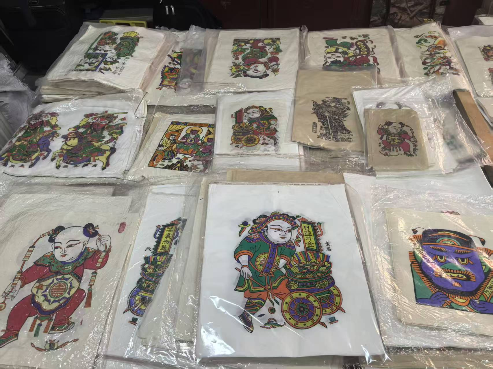

朱仙镇木板年画
首页
简介
图册
制作工艺
传承人

朱仙镇木板年画简介
1. 题材丰富：以门神、神话传说、戏曲故事、吉祥图案为主，具有驱邪纳福、祈愿吉祥的寓意。
2. 工艺独特：采用木版套色印刷，一色一版，需雕刻几十块版才能完成一幅作品，线条粗犷有力，细节古朴生动。
3. 色彩鲜明：多用矿物和植物颜料（如槐黄、苏木红等），以红、黄、绿、紫、黑为主色调，对比强烈却不失和谐。
4. 构图饱满：画面常无留白，人物造型夸张，突出面部表情和动态，具有强烈的装饰性和故事性。